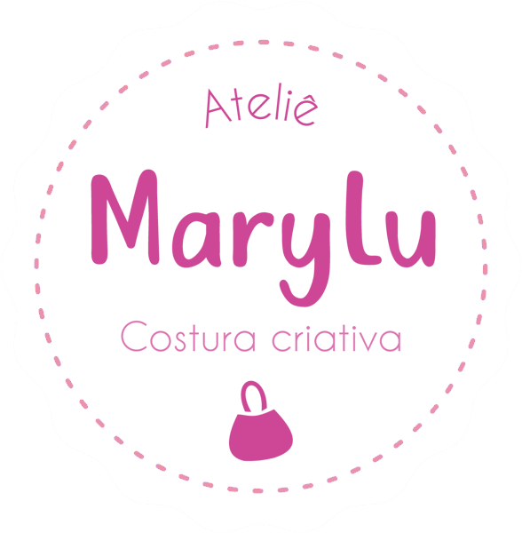
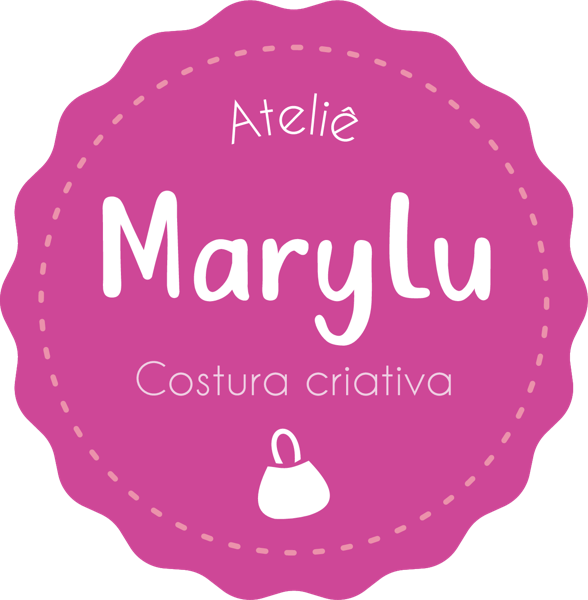

Bolsas
Modelos para o dia a dia, passeio e presente.

Ateliê MaryluCostura criativa · Rio de Janeiro
Bolsas, necessaires e acessórios em tecido, costurados um a um no ateliê. Cada peça é única.

O Ateliê Marylu nasceu do amor pela costura. Cada bolsa e cada acessório é pensado, cortado e costurado à mão, com tecidos escolhidos a dedo e acabamento caprichado.
Modelos para o dia a dia, passeio e presente.
Práticas, charmosas e em vários tamanhos.
Escolha o tecido e a gente costura do seu jeito.
Em breve você vai poder comprar pelo site, com cálculo de frete e pagamento em PIX ou cartão de crédito.
Encomendas, dúvidas e novidades pelo Instagram.
@ateliemarylurj